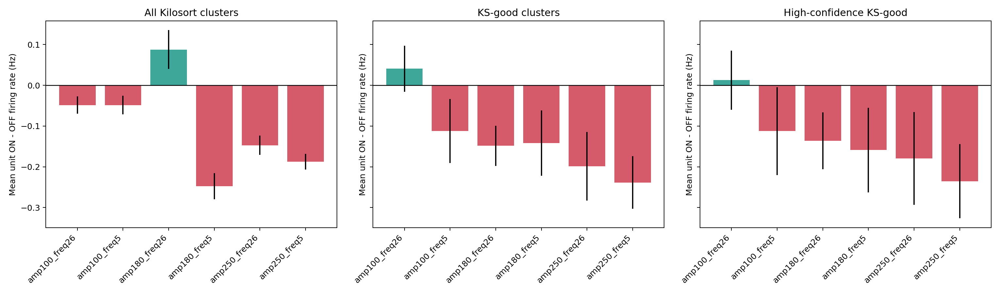
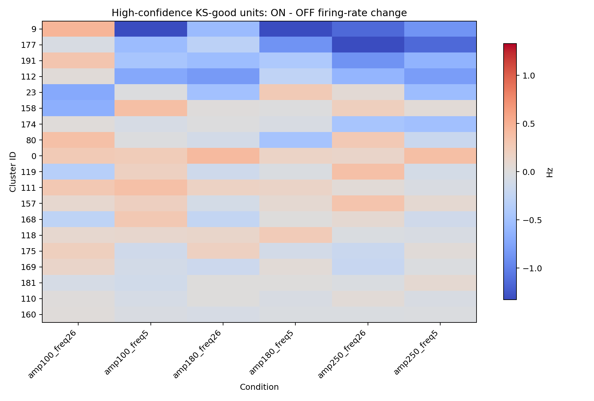
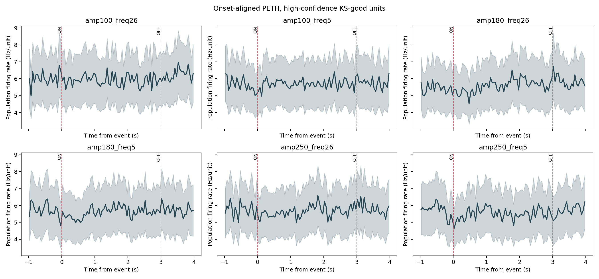
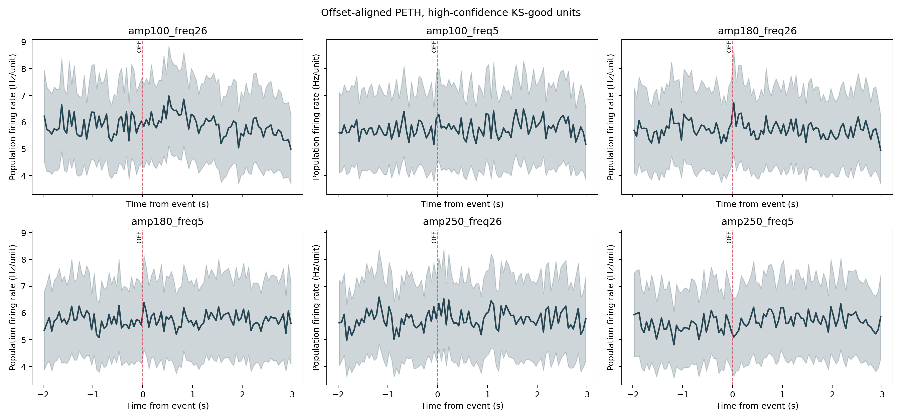

This report compares all Kilosort clusters, KS-good clusters, and the automated high-confidence KS-good subset. The control is each trial's following 3 s OFF interval.
19428191200



Caveat: still pre-Phy-curation. This is a cleaner exploratory subset, not final unit inclusion.